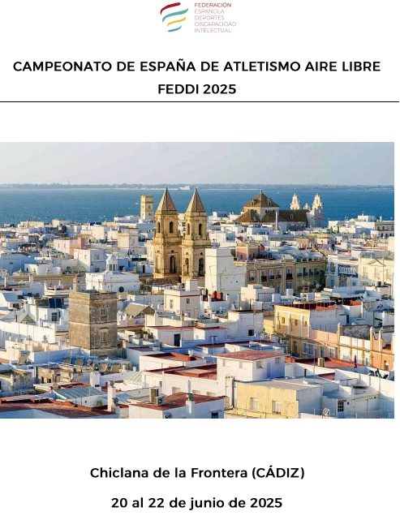
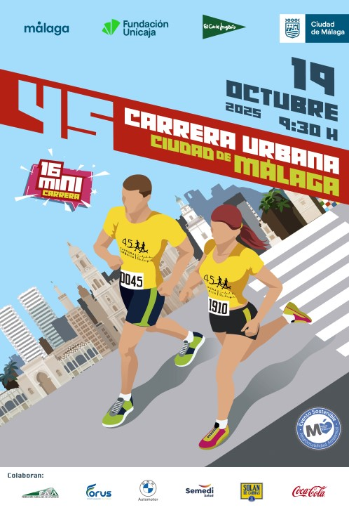

Resultados deAtletismo
Eventos de Atletismo por Fechas
Campeonato de España de Atletismo Short Track FEDDI 2025
08 Y 09 DE Febrero de 2025
Orense

Orense
XXVI CAMPEONATO DE ANDALUCÍA DE ATLETISMO FANDDI
5 Y 6 DE ABRIL DE 2025
SAN JOSÉ DE LA RINCONADA, SEVILLA

San José de la Rinconada
Campeonato de España de Selecciones Autonómicas - Atletismo
06 al 08 de Junio de 2025

Torrevieja
Campeonato de España de Atletismo Aire Libre FEDDI 2025
20 al 22 de Junio de 2025

Chiclana de la Frontera
45ª Carrera Urbana Ciudad de Málaga y 16ª Mini Carrera
19 de Octubre de 2025

Málaga


Con el Patrocinio de la Diputación Provicial de Málaga
Se informa que por Decreto número 2024/8975, de 19 de diciembre de 2024 de la Excma. Diputación de Málaga, los deportistas:
- Luis Barbero, Eloy de Soto, Julia Fernández, Manuel Guerrero, José Macías Arquillo, Jorge Otalecu
Esta ayuda les permitirá seguir superándose en la vida a través del DEPORTE.
Enhorabuena a nuestros deportistas y gracias a la Diputación de Málaga
Calendario de Eventos, Actividades Deportivas y Lúdicas
Calendario Ampliado